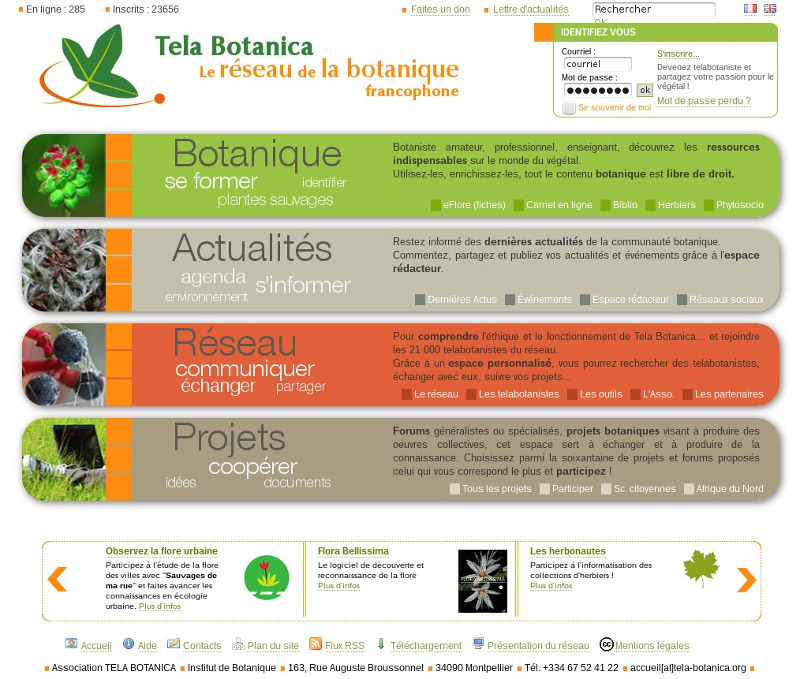

TELA BOTANICA
Le réseau de la botanique francophone
Tela Botanica
Une association internationale
pour la protection de la biodiversité
Une association internationale
pour la protection de la biodiversité

Mettre en réseau
les gens du coin
les gens du coin
Faire du bien commun
avec la botanique
avec la botanique
Sensibiliser
avec des outils
avec des outils
Collecte
Relevés de terrain (observations, images) & identification.


Saisie

www.tela-botanica.org

Nommer, géolocaliser, illustrer son observation de terrain
⇨ I. Intérêt personnel fort, puis...
Partage

Partage avec le collectif
⇨ II. Premier pas vers la coopération : apporter sa pierre à l'édifice


⇨ III. Se connaître, échanger...
Visualisation
Validation